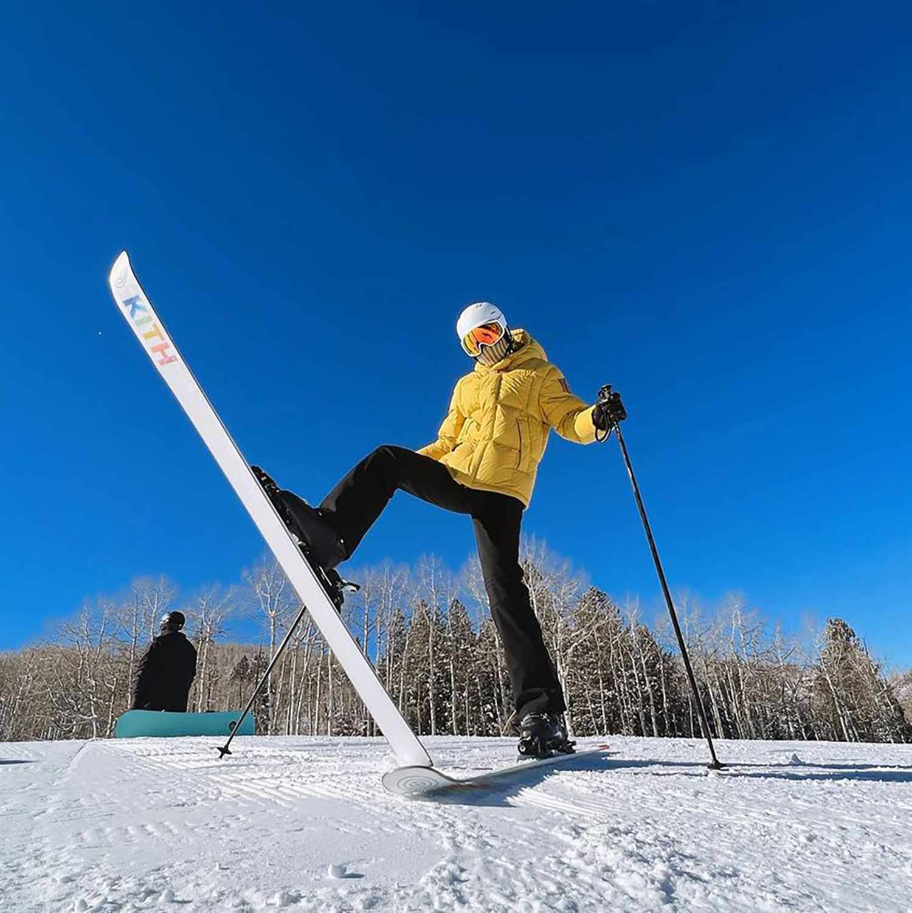
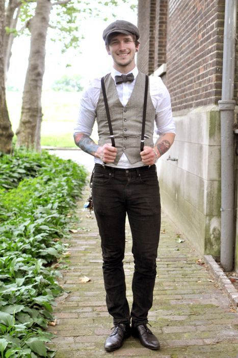
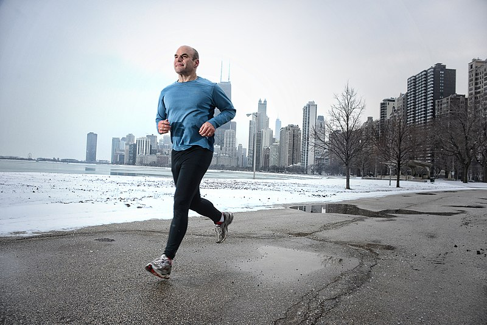
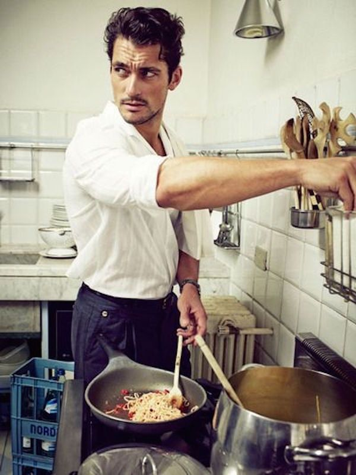

Skiing
Skiing is awesome because it lets me have fun in the snow, and going fast down the slopes is such a rush!
Fashion
Fashion helps me be creative with how I dress and keep up with the latest styles. It's like art but with clothes!
Running
I like running because it keeps me in shape and clears my mind. I don’t run as much as I used to, but I try to fit it in when I can.
Cooking
Cooking is fun because I get to try new recipes and make yummy food for my friends and family. Plus, who doesn’t love good food?
Traveling
Traveling is great because I get to explore new places and learn about different cultures. I love seeing new things!